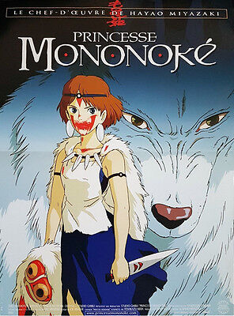

| Film | Affiche | Année de sortie | Bande Annonce | Lien Allociné |
|---|---|---|---|---|
| Le château ambulant | 2004 | Le château ambulant | ||
| Princesse Mononoké |  | 1997 | Princesse Mononoké | |
| Le Voyage de Chihiro | 2001 | Le voyage de Chihiro | ||
| Porco Rosso | 1992 | Porco Rosso | ||
| Mon voisin Totoro | 1988 | Voisin Totoro | ||
| Naussicäa de la vallée du vent |
| 1984 | Naussicäa de la vallée du vent |